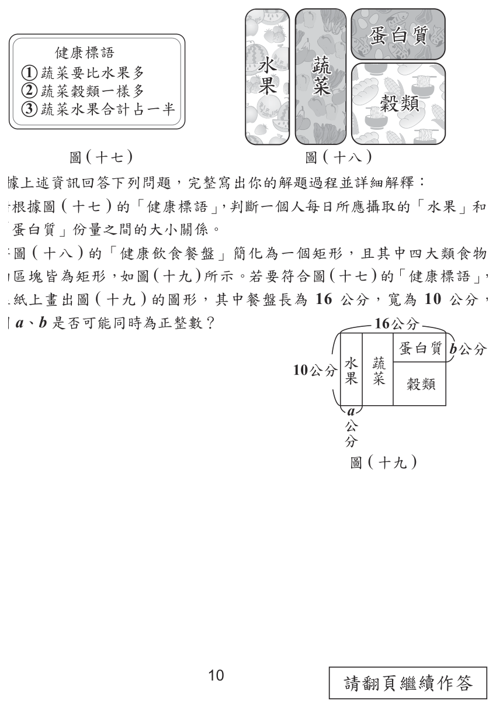
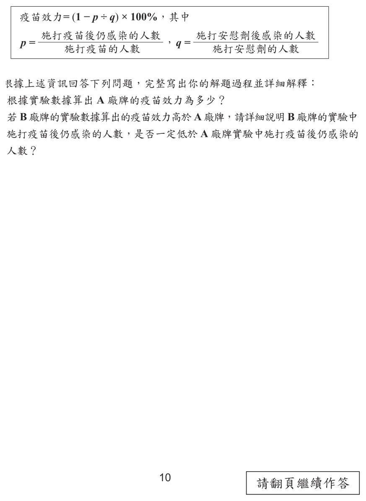
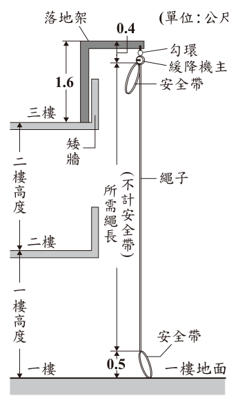

國中教育會考數學歷屆試題
開卷有益收錄國中教育會考「數學」民國 111–115 年的歷屆試題，共 5 份考卷、135 題，其中 135 題附有逐題詳解。每一份考卷都有獨立頁面，可以整卷看題目與答案，也可以直接線上作答。
線上練習 數學 →
本科概況
| 科目 | 數學（國中教育會考） |
|---|
| 題數 | 135 題 |
|---|
| 考卷份數 | 5 份 |
|---|
| 涵蓋年份 | 民國 111–115 年 |
|---|
| 詳解 | 135 題（100%） |
|---|
| 資料來源 | 心測中心 會考歷屆試題（依著作權法 §9，考試試題不受著作權保護） |
|---|
| 費用 | 免費，不需註冊，無廣告 |
|---|
數與量、代數、幾何、統計機率，含非選擇計算題。
歷年考卷（5 份）
點任一年度可看整份試題與標準答案。
題目長什麼樣
以下自本科題庫抽 5 題示例，完整題目請看上方各年度考卷。
第 1 題
解二元一次聯立方程式 \(\begin{cases} x + 2y = 5 \\ 2x - 2y = 1 \end{cases}\)，得 \(x\) 值為何？
- （A）\(-4\)
- （B）\(-2\)
- （C）\(2\)
- （D）\(4\)
答案：（C）
詳解與考點
正解：兩式的y項為2y與−2y，選相加可消去y。x+2y=5與2x−2y=1相加，得3x=6，再除以3，x=2，故C為正解。代回x+2y=5，得2+2y=5、2y=3、y=1.5，符合另一式。
A：−4把兩式相減或符號處理錯誤；正確相加應得3x=6，錯誤。
B：−2同樣不符合3x=6，錯誤。
D：4把3x=6的除法算錯；6÷3=2，不是4，錯誤。
本題考點：二元一次聯立方程式——係數相反時兩式相加即可消去該未知數；解出後代回原式可驗算。
第 1 題
算式 \( 7^{10} \times 7^{2} \div 7^{4} \) 之值可用下列何者表示？

- （A）\( 7^{3} \)
- （B）\( 7^{5} \)
- （C）\( 7^{8} \)
- （D）\( 7^{16} \)
答案：（C）
詳解與考點
正解：同底數冪相乘時指數相加、相除時指數相減。7¹⁰×7²÷7⁴＝7^(10+2)÷7⁴＝7^(12−4)＝7⁸，故 C 為正解。
A：7³ 把指數的運算規則用錯，沒有算出 10+2−4=8，錯誤。
B：7⁵ 漏算了部分相乘時應相加的指數，錯誤。
D：7¹⁶ 把÷7⁴誤當成×7⁴，算成 10+2+4，錯誤。
本題考點：指數律——同底數相乘，指數相加；同底數相除，指數相減；應依原算式由左至右整理為 10+2−4。
第 1 題
算式 \( \dfrac{3}{7} - \left( -\dfrac{1}{4} \right) \) 之值為何？

- （A）\( \dfrac{19}{28} \)
- （B）\( \dfrac{5}{28} \)
- （C）\( \dfrac{4}{11} \)
- （D）\( \dfrac{2}{3} \)
答案：（A）
詳解與考點
正解：題幹含有減去負分數，先將減負數改為加正數，再通分。3/7−(−1/4)=3/7+1/4。分母 7 與 4 的最小公倍數是 28，3/7=12/28，1/4=7/28，所以 12/28+7/28=19/28，故 A 為正解。
B：5/28 是把原式錯算成 12/28−7/28，忽略減去負數要變加，錯誤。
C：4/11 是將分子、分母分別相加成（3+1）/（7+4），分數加法不能如此計算，錯誤。
D：2/3 不符合通分後的 19/28；分數相加必先化為同分母，錯誤。
本題考點：負數的減法——a−(−b)=a+b；異分母分數加法——先通分，再將分子相加、分母維持不變。
第 1 題
\((-3)^3\) 之值為何？

- （A）\(-27\)
- （B）\(-9\)
- （C）\(9\)
- （D）\(27\)
答案：（A）
詳解與考點
正解：負數的三次方要把 -3 連乘 3 次。(-3)³=(-3)×(-3)×(-3)=9×(-3)=-27，所以 A 為正解。
B：-9 是只算了 (-3)×(-3) 的量，少乘 1 個 -3，錯誤。
C：9 是算到兩個負數相乘即停止，錯誤。
D：27 漏掉奇次方保留負號的結果，錯誤。
本題考點：整數次方——a³=a×a×a；負數的奇次方為負，負數的偶次方為正。
第 1 題
圖（一）數線上的 \(A\)、\(B\)、\(C\)、\(D\) 四點所表示的數分別為 \(a\)、\(b\)、\(c\)、\(d\)，且 \(O\) 為原點。根據圖中各點的位置判斷，下列何者的值最小？

- （A）\(|a|\)
- （B）\(|b|\)
- （C）\(|c|\)
- （D）\(|d|\)
答案：（A）
詳解與考點
正解：題幹問絕對值何者最小，應用絕對值代表數線上該點到原點O的距離，先比較各點離O的遠近。由圖可判讀A點最靠近O，因此|a|最小，故 A 為正解。
B：|b|是B點到O的距離；由圖可見B比A離O遠，所以|b|>|a|，錯誤。
C：|c|是C點到O的距離；由圖可見C比A離O遠，所以|c|>|a|，錯誤。
D：|d|是D點到O的距離；由圖可見D比A離O遠，所以|d|>|a|，錯誤。
本題考點：絕對值的幾何意義——|x|就是數線上x到原點的距離；比較判準——距原點愈近，絕對值愈小，不能把數值最小或最靠左誤當成絕對值最小。
國中教育會考其他科目
題目與標準答案出自心測中心 會考歷屆試題（依著作權法 §9，考試試題不受著作權保護），依《著作權法》第 9 條為非著作權標的，得自由利用；
本專案撰寫的詳解以 CC0 1.0 貢獻至公眾領域。詳解為 AI 整理的學習輔助，並非官方標準答案。